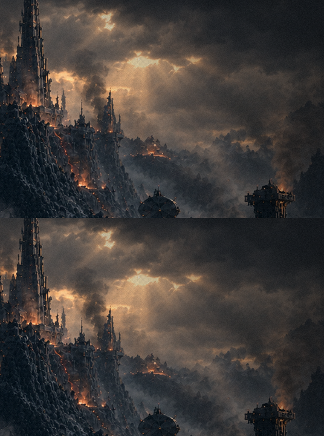
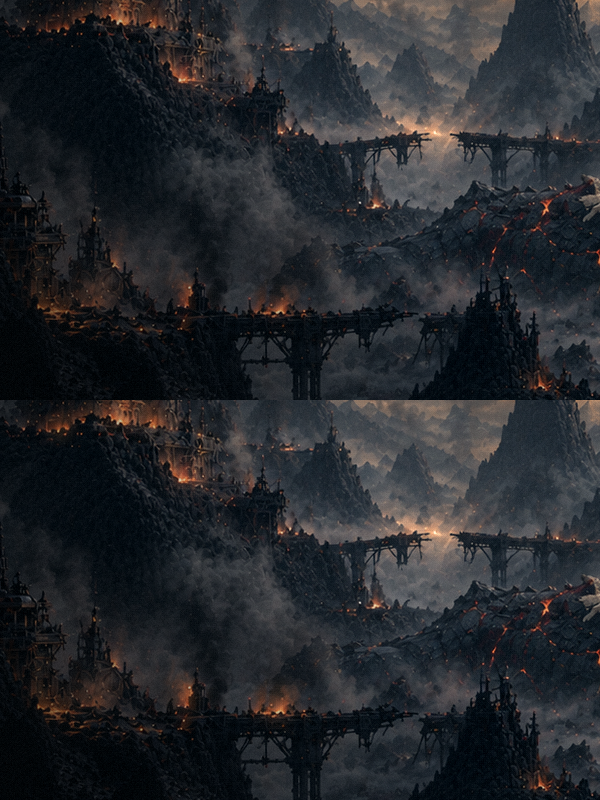
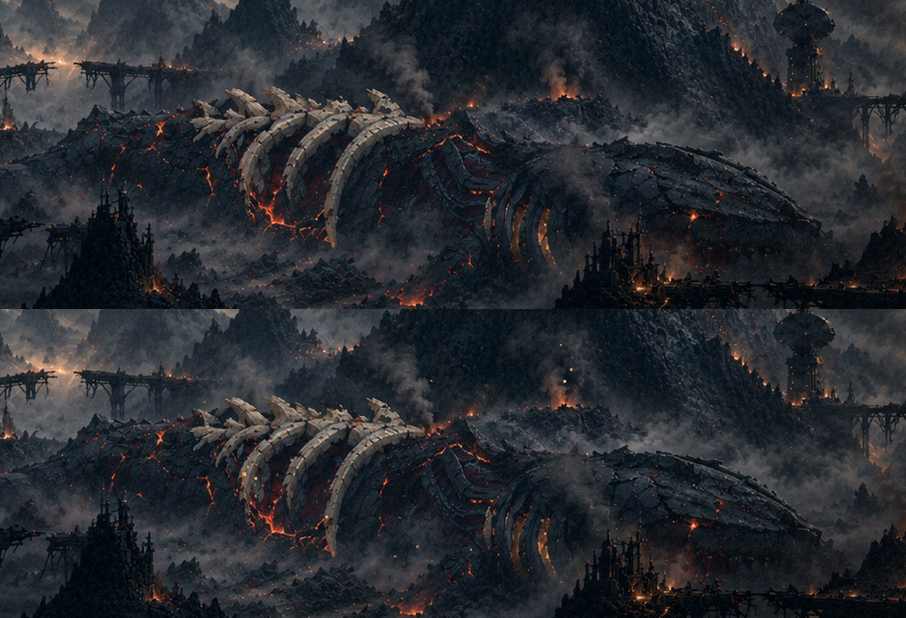
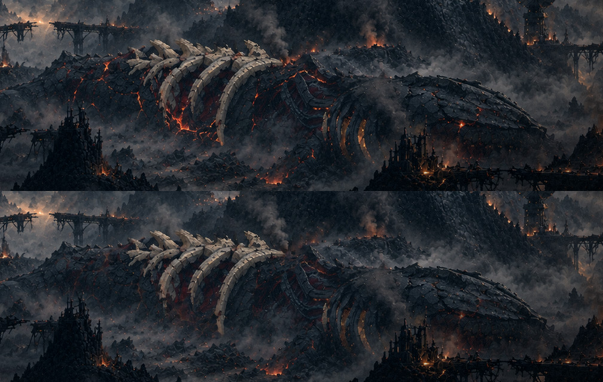
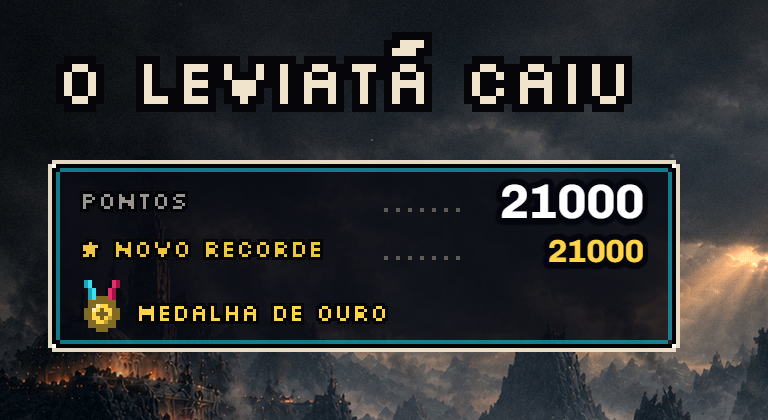

O amanhecer vivo, rodada 2: os cinco efeitos que faltavam
13/11 · bloco I, etapa 3, parte B · a rodada 1 em vida1.html.
O seu retorno à rodada 1: os raios ficam; a bruma "um pouco mais densa, não muito"; os outros efeitos "todos de uma vez", para ver na folha um por um; e a medalha do placar alguns pixels menor. Está tudo abaixo, cada efeito filmado sozinho no jogo, com o texto escondido. A pintura não foi tocada.
Tudo junto
1. A fumaça
Cada uma das seis colunas que a pintura já tem solta baforadas escuras que sobem inclinadas, crescem e se desfazem, sem sair do lugar pintado. Uma baforada leva de 7 a 10 s para subir.
De perto (a torre da direita e a coluna ao lado da cidadela)
A pintura sozinha (em cima) e com a fumaça (embaixo)

2. O fogo
Os 40 maiores focos de fogo da pintura ganham um clarão macio que tremula, cada um no seu ritmo. A chama pintada não se mexe; a luz dela, sim.
De perto (as ruínas da esquerda)
A pintura sozinha (em cima) e com o fogo (embaixo)

3. As brasas
46 ao todo: 30 sobem da lava da carcaça e 16 dos focos maiores. Cada uma sobe de 16 a 38 px em 4 a 8 s, balançando, esfria do amarelo ao vermelho e some.
De perto (a carcaça)
A pintura sozinha (em cima) e com as brasas (embaixo)

4. A lava quase apagada
É a amarra com o fim da cutscene, onde a lava esfria. A carcaça sem a lava fica por cima da pintura e respira em quatro faixas, cada uma no seu ritmo (de 9 a 15 s): a lava pintada aparece por baixo como brasa, entre 12% e 50% da força original, e nunca acende inteira.
De perto
A pintura sozinha (em cima) e com a lava quase apagada (embaixo)

5. A cinza
70 flocos claros caindo devagar pela tela inteira, na frente de tudo, balançando e derivando para a esquerda com o vento da bruma. Entra no lugar da poeira que flutuava no menu da noite.
A bruma, um pouco mais densa
Os picos subiram um quarto (de 0,30 para 0,38 nas duas faixas de trás). O resto é igual à rodada 1.
O placar: a medalha menor
De 13×17 px para 11×14 px.

O que eu preciso de você
- A lava: é a mudança mais forte, porque esfria a carcaça da sua pintura. O quanto ela fica apagada está certo, ou você a quer mais acesa?
- A fumaça e o fogo: estão discretos. Servem assim, ou quer mais presença?
- As brasas e a cinza: a quantidade e a velocidade servem?
- A bruma e a medalha: ficaram como você pediu?
Para ver no jogo: http://localhost:5173/?menu=amanhecer (tudo ligado). Para ligar só
alguns: &vida=lava,brasas (os nomes: bruma, raios, fumaca, fogo, brasas, lava, cinza;
&vida=0 é a pintura sozinha).